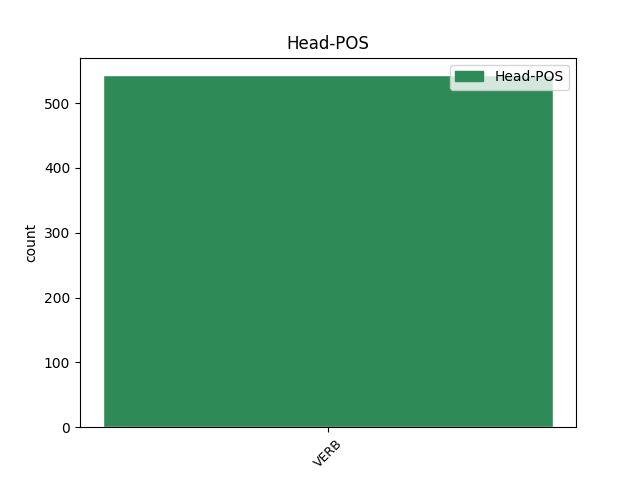

Distribution of features within this leaf

Agreement Rules sorted by frequency.
- When the dependent token is the subject(subj@pass) of the head token, and the head token is VERB and the dependent token is NOUN.
1 В _ _ _ _ 0 _ _ _
2 те _ _ _ _ 0 _ _ _
3 годы _ _ _ _ 0 _ _ _
4 в _ _ _ _ 0 _ _ _
5 селе _ _ _ _ 0 _ _ _
6 был _ _ _ _ 0 _ _ _
7 птичник _ _ _ _ 0 _ _ _
8 и _ _ _ _ 0 _ _ _
9 разбит разбить VERB VBNH Animacy=Inan|Aspect=Perf|Case=Nom|Gender=Masc|Number=Sing|Tense=Past|Variant=Short|VerbForm=Part|Voice=Pass 0 _ _ _
10 колхозный _ _ _ _ 0 _ _ _
11 сад сад NOUN NN Animacy=Inan|Case=Nom|Gender=Masc|Number=Sing 9 subj@pass _ SpaceAfter=No
12 . _ _ _ _ 0 _ _ _
1 Я _ _ _ _ 0 _ _ _
2 встречался _ _ _ _ 0 _ _ _
3 с _ _ _ _ 0 _ _ _
4 писателем _ _ _ _ 0 _ _ _
5 в _ _ _ _ 0 _ _ _
6 ту _ _ _ _ 0 _ _ _
7 пору _ _ _ _ 0 _ _ _
8 , _ _ _ _ 0 _ _ _
9 когда _ _ _ _ 0 _ _ _
10 в _ _ _ _ 0 _ _ _
11 Ленинграде _ _ _ _ 0 _ _ _
12 уже _ _ _ _ 0 _ _ _
13 не _ _ _ _ 0 _ _ _
14 было _ _ _ _ 0 _ _ _
15 издательства _ _ _ _ 0 _ _ _
16 , _ _ _ _ 0 _ _ _
17 не _ _ _ _ 0 _ _ _
18 сделавшего сделать VERB VBNL Animacy=Inan|Aspect=Perf|Case=Gen|Gender=Neut|Number=Sing|Tense=Past|VerbForm=Part|Voice=Act 0 _ _ _
19 ему _ _ _ _ 0 _ _ _
20 лестного _ _ _ _ 0 _ _ _
21 предложения предложение NOUN NN Animacy=Inan|Case=Gen|Gender=Neut|Number=Sing 18 comp:obj _ SpaceAfter=No
22 , _ _ _ _ 0 _ _ _
23 когда _ _ _ _ 0 _ _ _
24 учёные _ _ _ _ 0 _ _ _
25 самым _ _ _ _ 0 _ _ _
26 серьёзным _ _ _ _ 0 _ _ _
27 образом _ _ _ _ 0 _ _ _
28 говорили _ _ _ _ 0 _ _ _
29 о _ _ _ _ 0 _ _ _
30 лингвистическом _ _ _ _ 0 _ _ _
31 феномене _ _ _ _ 0 _ _ _
32 писателя _ _ _ _ 0 _ _ _
33 , _ _ _ _ 0 _ _ _
34 а _ _ _ _ 0 _ _ _
35 в _ _ _ _ 0 _ _ _
36 издательстве _ _ _ _ 0 _ _ _
37 `` _ _ _ _ 0 _ _ _
38 Академия _ _ _ _ 0 _ _ _
39 '' _ _ _ _ 0 _ _ _
40 подготавливалась _ _ _ _ 0 _ _ _
41 о _ _ _ _ 0 _ _ _
42 нём _ _ _ _ 0 _ _ _
43 книга _ _ _ _ 0 _ _ _
44 . _ _ _ _ 0 _ _ _
1 Я _ _ _ _ 0 _ _ _
2 за _ _ _ _ 0 _ _ _
3 возрождение _ _ _ _ 0 _ _ _
4 религиозной _ _ _ _ 0 _ _ _
5 веры _ _ _ _ 0 _ _ _
6 , _ _ _ _ 0 _ _ _
7 потому _ _ _ _ 0 _ _ _
8 что _ _ _ _ 0 _ _ _
9 это _ _ _ _ 0 _ _ _
10 не _ _ _ _ 0 _ _ _
11 привнесенное привнести VERB VBNL Animacy=Inan|Aspect=Perf|Case=Nom|Gender=Neut|Number=Sing|Tense=Past|VerbForm=Part|Voice=Pass 0 _ _ _
12 извне _ _ _ _ 0 _ _ _
13 , _ _ _ _ 0 _ _ _
14 это _ _ _ _ 0 _ _ _
15 органичное _ _ _ _ 0 _ _ _
16 состояние состояние NOUN NN Animacy=Inan|Case=Nom|Gender=Neut|Number=Sing 11 parataxis _ _
17 человека _ _ _ _ 0 _ _ _
18 , _ _ _ _ 0 _ _ _
19 которое _ _ _ _ 0 _ _ _
20 сформировано _ _ _ _ 0 _ _ _
21 в _ _ _ _ 0 _ _ _
22 течение _ _ _ _ 0 _ _ _
23 сотен _ _ _ _ 0 _ _ _
24 тысяч _ _ _ _ 0 _ _ _
25 лет _ _ _ _ 0 _ _ _
26 . _ _ _ _ 0 _ _ _
1 Нагрудный _ _ _ _ 0 _ _ _
2 знак _ _ _ _ 0 _ _ _
3 при _ _ _ _ 0 _ _ _
4 помощи _ _ _ _ 0 _ _ _
5 ушка _ _ _ _ 0 _ _ _
6 и _ _ _ _ 0 _ _ _
7 кольца _ _ _ _ 0 _ _ _
8 соединяется _ _ _ _ 0 _ _ _
9 с _ _ _ _ 0 _ _ _
10 треугольной _ _ _ _ 0 _ _ _
11 колодкой _ _ _ _ 0 _ _ _
12 , _ _ _ _ 0 _ _ _
13 обтянутой обтянуть VERB VBNL Animacy=Inan|Aspect=Perf|Case=Ins|Gender=Fem|Number=Sing|Tense=Past|VerbForm=Part|Voice=Pass 0 _ _ _
14 шелковой _ _ _ _ 0 _ _ _
15 муаровой _ _ _ _ 0 _ _ _
16 лентой лента NOUN NN Animacy=Inan|Case=Ins|Gender=Fem|Number=Sing 13 comp:obl _ _
17 шириной _ _ _ _ 0 _ _ _
18 24 _ _ _ _ 0 _ _ _
19 мм _ _ _ _ 0 _ _ _
20 с _ _ _ _ 0 _ _ _
21 тремя _ _ _ _ 0 _ _ _
22 вертикальными _ _ _ _ 0 _ _ _
23 полосами _ _ _ _ 0 _ _ _
24 , _ _ _ _ 0 _ _ _
25 символизирующими _ _ _ _ 0 _ _ _
26 цвета _ _ _ _ 0 _ _ _
27 флага _ _ _ _ 0 _ _ _
28 Тверской _ _ _ _ 0 _ _ _
29 области _ _ _ _ 0 _ _ _
30 : _ _ _ _ 0 _ _ _
31 посередине _ _ _ _ 0 _ _ _
32 -- _ _ _ _ 0 _ _ _
33 красной _ _ _ _ 0 _ _ _
34 шириной _ _ _ _ 0 _ _ _
35 14 _ _ _ _ 0 _ _ _
36 мм _ _ _ _ 0 _ _ _
37 , _ _ _ _ 0 _ _ _
38 справа _ _ _ _ 0 _ _ _
39 и _ _ _ _ 0 _ _ _
40 слева _ _ _ _ 0 _ _ _
41 от _ _ _ _ 0 _ _ _
42 нее _ _ _ _ 0 _ _ _
43 -- _ _ _ _ 0 _ _ _
44 золотистой _ _ _ _ 0 _ _ _
45 шириной _ _ _ _ 0 _ _ _
46 по _ _ _ _ 0 _ _ _
47 5 _ _ _ _ 0 _ _ _
48 мм _ _ _ _ 0 _ _ _
49 каждая _ _ _ _ 0 _ _ _
50 . _ _ _ _ 0 _ _ _
1 Его _ _ _ _ 0 _ _ _
2 происхождение _ _ _ _ 0 _ _ _
3 связано _ _ _ _ 0 _ _ _
4 с _ _ _ _ 0 _ _ _
5 тем _ _ _ _ 0 _ _ _
6 , _ _ _ _ 0 _ _ _
7 что _ _ _ _ 0 _ _ _
8 из-за _ _ _ _ 0 _ _ _
9 строжайшего _ _ _ _ 0 _ _ _
10 формализма _ _ _ _ 0 _ _ _
11 общего _ _ _ _ 0 _ _ _
12 права _ _ _ _ 0 _ _ _
13 большинство _ _ _ _ 0 _ _ _
14 людей _ _ _ _ 0 _ _ _
15 практически _ _ _ _ 0 _ _ _
16 не _ _ _ _ 0 _ _ _
17 имело _ _ _ _ 0 _ _ _
18 возможности _ _ _ _ 0 _ _ _
19 подать _ _ _ _ 0 _ _ _
20 иск _ _ _ _ 0 _ _ _
21 в _ _ _ _ 0 _ _ _
22 королевские _ _ _ _ 0 _ _ _
23 суды _ _ _ _ 0 _ _ _
24 , _ _ _ _ 0 _ _ _
25 что _ _ _ _ 0 _ _ _
26 заставляло _ _ _ _ 0 _ _ _
27 многих _ _ _ _ 0 _ _ _
28 ( _ _ _ _ 0 _ _ _
29 в _ _ _ _ 0 _ _ _
30 том _ _ _ _ 0 _ _ _
31 числе _ _ _ _ 0 _ _ _
32 тех _ _ _ _ 0 _ _ _
33 , _ _ _ _ 0 _ _ _
34 кто _ _ _ _ 0 _ _ _
35 не _ _ _ _ 0 _ _ _
36 был _ _ _ _ 0 _ _ _
37 согласен _ _ _ _ 0 _ _ _
38 с _ _ _ _ 0 _ _ _
39 вынесенными вынести VERB VBNL Animacy=Inan|Aspect=Perf|Case=Ins|Number=Plur|Tense=Past|VerbForm=Part|Voice=Pass 0 _ _ _
40 судами суд NOUN NN Animacy=Inan|Case=Ins|Gender=Masc|Number=Plur 39 comp:obl@agent _ _
41 решениями _ _ _ _ 0 _ _ _
42 ) _ _ _ _ 0 _ _ _
43 обращаться _ _ _ _ 0 _ _ _
44 к _ _ _ _ 0 _ _ _
45 королю _ _ _ _ 0 _ _ _
46 напрямую _ _ _ _ 0 _ _ _
47 , _ _ _ _ 0 _ _ _
48 прося _ _ _ _ 0 _ _ _
49 его _ _ _ _ 0 _ _ _
50 о _ _ _ _ 0 _ _ _
51 `` _ _ _ _ 0 _ _ _
52 милости _ _ _ _ 0 _ _ _
53 и _ _ _ _ 0 _ _ _
54 справедливости _ _ _ _ 0 _ _ _
55 '' _ _ _ _ 0 _ _ _
56 ( _ _ _ _ 0 _ _ _
57 отсюда _ _ _ _ 0 _ _ _
58 и _ _ _ _ 0 _ _ _
59 возникло _ _ _ _ 0 _ _ _
60 названия _ _ _ _ 0 _ _ _
61 права _ _ _ _ 0 _ _ _
62 ) _ _ _ _ 0 _ _ _
63 . _ _ _ _ 0 _ _ _
1 Даже _ _ _ _ 0 _ _ _
2 имена _ _ _ _ 0 _ _ _
3 у _ _ _ _ 0 _ _ _
4 них _ _ _ _ 0 _ _ _
5 отвратительные _ _ _ _ 0 _ _ _
6 : _ _ _ _ 0 _ _ _
7 например _ _ _ _ 0 _ _ _
8 , _ _ _ _ 0 _ _ _
9 Каттроут _ _ _ _ 0 _ _ _
10 -- _ _ _ _ 0 _ _ _
11 в _ _ _ _ 0 _ _ _
12 переводе _ _ _ _ 0 _ _ _
13 `` _ _ _ _ 0 _ _ _
14 головорез _ _ _ _ 0 _ _ _
15 '' _ _ _ _ 0 _ _ _
16 , _ _ _ _ 0 _ _ _
17 Блот _ _ _ _ 0 _ _ _
18 -- _ _ _ _ 0 _ _ _
19 `` _ _ _ _ 0 _ _ _
20 пятно пятно NOUN NN Animacy=Inan|Case=Nom|Gender=Neut|Number=Sing 26 orphan _ SpaceAfter=No
21 '' _ _ _ _ 0 _ _ _
22 , _ _ _ _ 0 _ _ _
23 Рипперснэппер _ _ _ _ 0 _ _ _
24 -- _ _ _ _ 0 _ _ _
25 `` _ _ _ _ 0 _ _ _
26 рвущий рвать VERB VBNL Animacy=Anim|Aspect=Imp|Case=Nom|Gender=Masc|Number=Sing|Tense=Pres|VerbForm=Part|Voice=Act 0 _ _ _
27 и _ _ _ _ 0 _ _ _
28 терзающий _ _ _ _ 0 _ _ _
29 '' _ _ _ _ 0 _ _ _
30 , _ _ _ _ 0 _ _ _
31 и _ _ _ _ 0 _ _ _
32 т. _ _ _ _ 0 _ _ _
33 п _ _ _ _ 0 _ _ _
34 . _ _ _ _ 0 _ _ _
Disagree Examples:
1 Позже _ _ _ _ 0 _ _ _
2 вышел _ _ _ _ 0 _ _ _
3 имеющий иметь VERB VBNL Animacy=Inan|Aspect=Imp|Case=Nom|Gender=Masc|Number=Sing|Tense=Pres|VerbForm=Part|Voice=Act 0 _ _ _
4 силу сила NOUN NN Animacy=Inan|Case=Acc|Gender=Fem|Number=Sing 3 comp:obj _ _
5 Закона _ _ _ _ 0 _ _ _
6 Указ _ _ _ _ 0 _ _ _
7 Президента _ _ _ _ 0 _ _ _
8 Республики _ _ _ _ 0 _ _ _
9 Казахстан _ _ _ _ 0 _ _ _
10 от _ _ _ _ 0 _ _ _
11 15 _ _ _ _ 0 _ _ _
12 сентября _ _ _ _ 0 _ _ _
13 1995 _ _ _ _ 0 _ _ _
14 г _ _ _ _ 0 _ _ _
15 . _ _ _ _ 0 _ _ _
1 Название _ _ _ _ 0 _ _ _
2 дано дать VERB VBNH Animacy=Inan|Aspect=Perf|Case=Nom|Gender=Neut|Number=Sing|Tense=Past|Variant=Short|VerbForm=Part|Voice=Pass 0 _ _ _
3 европейцами европеец NOUN NN Animacy=Anim|Case=Ins|Gender=Masc|Number=Plur 2 comp:obl@agent _ _
4 ближайшему _ _ _ _ 0 _ _ _
5 к _ _ _ _ 0 _ _ _
6 ним _ _ _ _ 0 _ _ _
7 восточному _ _ _ _ 0 _ _ _
8 региону _ _ _ _ 0 _ _ _
9 . _ _ _ _ 0 _ _ _
1 Название _ _ _ _ 0 _ _ _
2 дано дать VERB VBNH Animacy=Inan|Aspect=Perf|Case=Nom|Gender=Neut|Number=Sing|Tense=Past|Variant=Short|VerbForm=Part|Voice=Pass 0 _ _ _
3 европейцами _ _ _ _ 0 _ _ _
4 ближайшему _ _ _ _ 0 _ _ _
5 к _ _ _ _ 0 _ _ _
6 ним _ _ _ _ 0 _ _ _
7 восточному _ _ _ _ 0 _ _ _
8 региону регион NOUN NN Animacy=Inan|Case=Dat|Gender=Masc|Number=Sing 2 comp:obl _ SpaceAfter=No
9 . _ _ _ _ 0 _ _ _
1 Поставленная поставить VERB VBNL Animacy=Inan|Aspect=Perf|Case=Nom|Gender=Fem|Number=Sing|Tense=Past|VerbForm=Part|Voice=Pass 0 _ _ _
2 комиссии комиссия NOUN NN Animacy=Inan|Case=Dat|Gender=Fem|Number=Sing 1 comp:obj _ _
3 задача _ _ _ _ 0 _ _ _
4 предусматривала _ _ _ _ 0 _ _ _
5 изучение _ _ _ _ 0 _ _ _
6 имеющихся _ _ _ _ 0 _ _ _
7 зарубежных _ _ _ _ 0 _ _ _
8 данных _ _ _ _ 0 _ _ _
9 о _ _ _ _ 0 _ _ _
10 строительстве _ _ _ _ 0 _ _ _
11 полуподводных _ _ _ _ 0 _ _ _
12 миноносцев _ _ _ _ 0 _ _ _
13 , _ _ _ _ 0 _ _ _
14 проектирование _ _ _ _ 0 _ _ _
15 и _ _ _ _ 0 _ _ _
16 постройка _ _ _ _ 0 _ _ _
17 погружающегося _ _ _ _ 0 _ _ _
18 судна _ _ _ _ 0 _ _ _
19 для _ _ _ _ 0 _ _ _
20 береговой _ _ _ _ 0 _ _ _
21 обороны _ _ _ _ 0 _ _ _
22 . _ _ _ _ 0 _ _ _
1 Известность _ _ _ _ 0 _ _ _
2 получил _ _ _ _ 0 _ _ _
3 также _ _ _ _ 0 _ _ _
4 еврейский _ _ _ _ 0 _ _ _
5 партизанский _ _ _ _ 0 _ _ _
6 отряд _ _ _ _ 0 _ _ _
7 106 _ _ _ _ 0 _ _ _
8 Шолома _ _ _ _ 0 _ _ _
9 Зорина _ _ _ _ 0 _ _ _
10 , _ _ _ _ 0 _ _ _
11 насчитывавший насчитывать VERB VBNL Animacy=Inan|Aspect=Imp|Case=Nom|Gender=Masc|Number=Sing|Tense=Pres|VerbForm=Part|Voice=Act 0 _ _ _
12 600 _ _ _ _ 0 _ _ _
13 человек человек NOUN NN Animacy=Anim|Case=Gen|Gender=Masc|Number=Plur 11 comp:obj _ SpaceAfter=No
14 , _ _ _ _ 0 _ _ _
15 в _ _ _ _ 0 _ _ _
16 том _ _ _ _ 0 _ _ _
17 числе _ _ _ _ 0 _ _ _
18 137 _ _ _ _ 0 _ _ _
19 -- _ _ _ _ 0 _ _ _
20 боевая _ _ _ _ 0 _ _ _
21 рота _ _ _ _ 0 _ _ _
22 , _ _ _ _ 0 _ _ _
23 остальные _ _ _ _ 0 _ _ _
24 гражданские _ _ _ _ 0 _ _ _
25 ( _ _ _ _ 0 _ _ _
26 в _ _ _ _ 0 _ _ _
27 основном _ _ _ _ 0 _ _ _
28 женщины _ _ _ _ 0 _ _ _
29 и _ _ _ _ 0 _ _ _
30 дети _ _ _ _ 0 _ _ _
31 ) _ _ _ _ 0 _ _ _
32 . _ _ _ _ 0 _ _ _